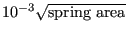

Next: Normal contact stiffness Up: Node-to-Face Penalty Contact Previous: Node-to-Face Penalty Contact Contents
Contact is a strongly nonlinear kind of boundary condition, preventing bodies to penetrate each other. The contact definitions implemented in CalculiX are a node-to-face penalty method and a face-to-face penalty method, both based on a pairwise interaction of surfaces. They cannot be mixed in one and the same input deck. In the present section the node-to-face penalty method is explained. For details on the penalty method the reader is referred to [87] and [43].
Each pair of interacting surfaces consists of a dependent surface and an independent surface. The dependent surface (= slave) may be defined based on nodes or element faces, the independent surface (= master) must consist of element faces (Figure 129). The element faces within one independent surface must be such, that any edge of any face has at most one neighboring face. Usually, the mesh on the dependent side should be at least as fine as on the independent side. As many pairs can be defined as needed. A contact pair is defined by the keyword card *CONTACT PAIR.
If the elements adjacent to the slave surface are quadratic elements (e.g. C3D20, C3D10 or C3D15), convergence may be slower. This especially applies to elements having quadrilateral faces in the slave surface. A uniform pressure on a quadratic (8-node) quadrilateral face leads to compressive forces in the midnodes and tensile forces in the vertex nodes [19] (with weights of 1/3 and -1/12, respectively). The tensile forces in the corner nodes usually lead to divergence if this node belongs to a node-to-face contact element. Therefore, in CalculiX the weights are modified into 24/100 and 1/100, respectively. In general, node-to-face contact is not recommended for quadratic elements. Instead, face-to-face contact should be used.
In CalculiX, penalty contact is modeled by the generation of (non)linear spring elements. To this end, for each node on the dependent surface, a face on the independent surface is localized such that it contains the orthogonal projection of the node. If such is face is found a nonlinear spring element is generated consisting of the dependent node and all vertex nodes belonging to the independent face (Figure 130). Depending of the kind of face the contact spring element contains 4, 5, 7 or 9 nodes. The properties of the spring are defined by a *SURFACE INTERACTION definition, whose name must be specified on the *CONTACT PAIR card.
The user can determine how often during the calculation the pairing of the dependent nodes with the independent faces takes place. If the user specifies the parameter SMALL SLIDING on the *CONTACT PAIR card, the pairing is done once per increment. If this parameter is not selected, the pairing is checked every iteration for all iterations below 9, for iterations 9 and higher the contact elements are frozen to improve convergence. Deactivating SMALL SLIDING is useful if the sliding is particularly large.
The *SURFACE INTERACTION keyword card is very similar to the *MATERIAL card: it starts the definition of interaction properties in the same way a *MATERIAL card starts the definition of material properties. Whereas material properties are characterized by cards such as *DENSITY or *ELASTIC, interaction properties are denoted by the *SURFACE BEHAVIOR and the *FRICTION card. All cards beneath a *SURFACE INTERACTION card are interpreted as belonging to the surface interaction definition until a keyword card is encountered which is not a surface interaction description card. At that point, the surface interaction description is considered to be finished. Consequently, an interaction description is a closed block in the same way as a material description, Figure 3.
The *SURFACE BEHAVIOR card defines the linear (actually quasi bilinear as
illustrated by Figure 132), exponential, or piecewice linear normal
(i.e. locally perpendicular onto the master surface) behavior of the spring
element. The pressure  exerted on the independent face of a contact spring
element with exponential behavior is given by
exerted on the independent face of a contact spring
element with exponential behavior is given by
| (183) |
where  is the pressure at zero clearance,
is the pressure at zero clearance,  is a coefficient and
is a coefficient and
 is the overclosure (penetration of the slave node into the master side; a
negative penetration is a clearance). Instead of having to specify
is the overclosure (penetration of the slave node into the master side; a
negative penetration is a clearance). Instead of having to specify
 , which lacks an immediate physical significance, the user is expected
to specify
, which lacks an immediate physical significance, the user is expected
to specify  which is the clearance at which the pressure is 1 % of
which is the clearance at which the pressure is 1 % of
 . From this
. From this  can be calculated:
can be calculated:
 |
(184) |
The pressure curve for and  looks like in Figure
131. A large value of
looks like in Figure
131. A large value of  leads to soft contact, i.e. large
penetrations can occur, hard contact is modeled by a small value of
leads to soft contact, i.e. large
penetrations can occur, hard contact is modeled by a small value of
 . Hard contact leads to slower convergence than soft contact. If the
distance of the slave node to the master surface exceeds
. Hard contact leads to slower convergence than soft contact. If the
distance of the slave node to the master surface exceeds  no contact
spring element is generated. For exponential behavior the user has to specify
no contact
spring element is generated. For exponential behavior the user has to specify
 and
and  underneath the *SURFACE BEHAVIOR card.
underneath the *SURFACE BEHAVIOR card.
In case of a linear contact spring the pressure-overclosure relationship is given by
were  is a small number. The term in square brackets makes sure that the value of p is very
small for
is a small number. The term in square brackets makes sure that the value of p is very
small for  . In general, a linear
contact spring formulation will converge more easily than an exponential
behavior. The pressure curve for
. In general, a linear
contact spring formulation will converge more easily than an exponential
behavior. The pressure curve for  and
and
 looks like in Figure
132. A large value of
looks like in Figure
132. A large value of  leads to hard contact. To obtain good
results
leads to hard contact. To obtain good
results  should typically be 5 to 50 times the E-modulus of the adjacent
materials. If one knows the roughness of the contact surfaces in the form of a
peak-to-valley distance
should typically be 5 to 50 times the E-modulus of the adjacent
materials. If one knows the roughness of the contact surfaces in the form of a
peak-to-valley distance  and the maximum pressure to expect,
one might estimate the spring constant by
and the maximum pressure to expect,
one might estimate the spring constant by
 . The units of K
are [Force]/[Length]
. The units of K
are [Force]/[Length] .
.
Notice that for a large negative overclosure a tension
 results
(for
), equal to
results
(for
), equal to
 . The value of
. The value of
 has to be specified by the user. A good value is about 0.25
% of the maximum expected stress in the model. CalculiX calculates
has to be specified by the user. A good value is about 0.25
% of the maximum expected stress in the model. CalculiX calculates  from
from
 and
and  .
.
For a linear contact spring the distance beyond which no contact
spring element is generated is defined by
 if the
spring area exceeds zero, and
if the
spring area exceeds zero, and  otherwise. The default for
otherwise. The default for  is
is
 (dimensionless) but may be changed by the user. For a linear
pressure-overclosure relationship the user has to specify
(dimensionless) but may be changed by the user. For a linear
pressure-overclosure relationship the user has to specify  and
and
 underneath the *SURFACE BEHAVIOR card.
underneath the *SURFACE BEHAVIOR card.  is optional,
and may be entered as the third value on the same line.
is optional,
and may be entered as the third value on the same line.
The pressure-overclosure behavior can also be defined as a piecewise linear
function (PRESSURE-OVERCLOSURE=TABULAR). In this way the user can use
experimental data to define the curve. For a tabular spring the distance beyond which no contact
spring element is generated is defined by
 if the
spring area exceeds zero, and  otherwise. For tabular behavior the
user has to enter pressure-overclosure pairs, one on a line.
otherwise. For tabular behavior the
user has to enter pressure-overclosure pairs, one on a line.
The normal spring force is defined as the pressure multiplied by the spring area. The spring area is assigned to the slave nodes and defined by 1/4 (linear quadrilateral faces) or 1/3 (linear triangular faces) of the slave faces the slave node belongs to. For quadratic quadrilateral faces the weights are 24/100 for middle nodes and 1/100 for corner nodes. For quadratic triangular faces these weight are 1/3 and 0, respectively.
The tangential spring force is defined as the shear stress multiplied by the
spring area. The shear stress is a function of the relative displacement
between the slave node and the master face. This function is shown in
Figure 133. It consists of a stick range, in which the shear
stress is a linear function of the relative tangential displacement, and a slip
range, for which the shear stress is a function of the local pressure
only. User input consists of the friction coefficient  which is
dimensionless and usually takes values between 0.1 and 0.5 and the stick slope
which is
dimensionless and usually takes values between 0.1 and 0.5 and the stick slope  which has the dimension of force per unit of volume and
should be chosen about 100 times smaller than the spring constant.
which has the dimension of force per unit of volume and
should be chosen about 100 times smaller than the spring constant.
The friction can be redefined in all but the first step by the *CHANGE FRICTION keyword card. In the same way contact pairs can be activated or deactivated in all but the first step by using the *MODEL CHANGE card.
If CalculiX detects an overlap of the contacting surfaces at the start of a step, the overlap is completely taken into account at the start of the step for a dynamic calculation (*DYNAMIC or *MODAL DYNAMIC) whereas it is linearly ramped for a static calculation (*STATIC).
Finally a few useful rules if you experience convergence problems:
Notice that the parameter CONTACT ELEMENTS on the *NODE
FILE, *EL FILE, NODE OUTPUT, or
*ELEMENT OUTPUT card stores the contact elements which have
been generated in each iteration as a set with the name
contactelements_st _in
_in _at_it
_at_it (where
(where  is the step number,
is the step number,  the increment number, the attempt number
and
the increment number, the attempt number
and  the iteration number) in a file
jobname.cel. When
opening the frd file with CalculiX GraphiX this file can be read with the
command “read jobname.cel inp” and visualized by
plotting the elements in the appropriate set. These elements are the contact spring
elements and connect the slave nodes
with the corresponding master surfaces. In case of contact these elements will
be very flat. Moving the parts apart (by a translation) will improve
the visualization. Using the screen up and screen down key one can check how
contact evolved during the calculation. Looking at where contact elements have been generated may
help localizing the problem in case of divergence.
the iteration number) in a file
jobname.cel. When
opening the frd file with CalculiX GraphiX this file can be read with the
command “read jobname.cel inp” and visualized by
plotting the elements in the appropriate set. These elements are the contact spring
elements and connect the slave nodes
with the corresponding master surfaces. In case of contact these elements will
be very flat. Moving the parts apart (by a translation) will improve
the visualization. Using the screen up and screen down key one can check how
contact evolved during the calculation. Looking at where contact elements have been generated may
help localizing the problem in case of divergence.
The number of contact elements generated is also listed in the screen output for each iteration in which contact was established anew, i.e. for each iteration if the SMALL SLIDING parameter was not used on the *CONTACT PAIR card, else only in the first iteration of each increment.